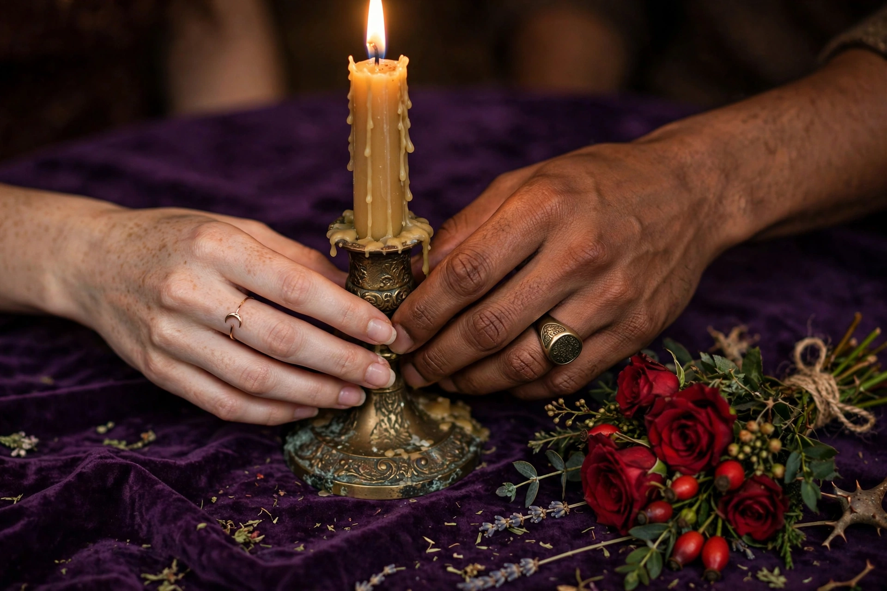
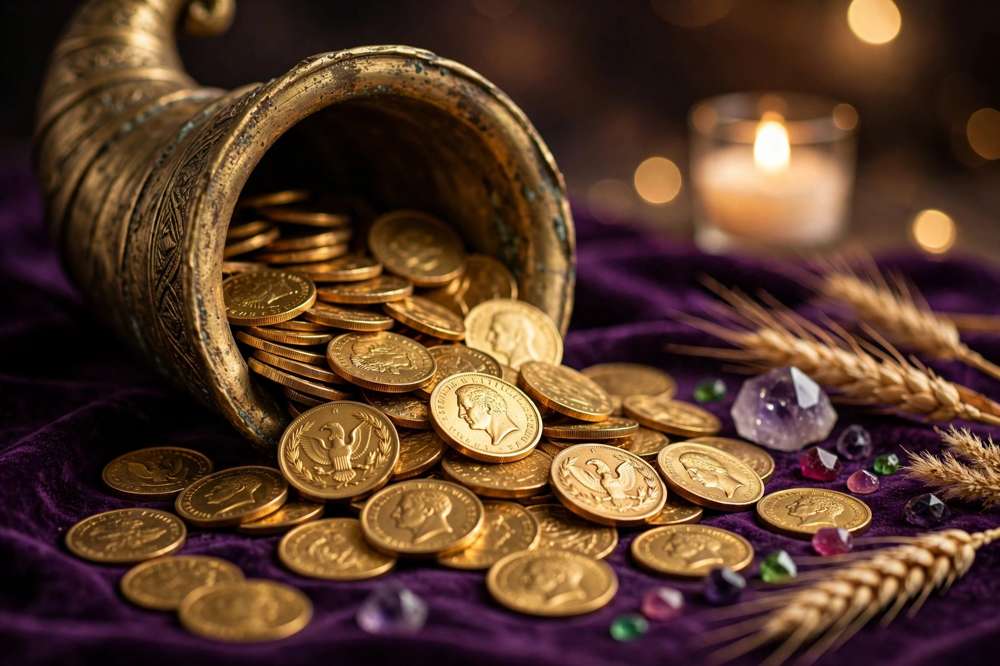
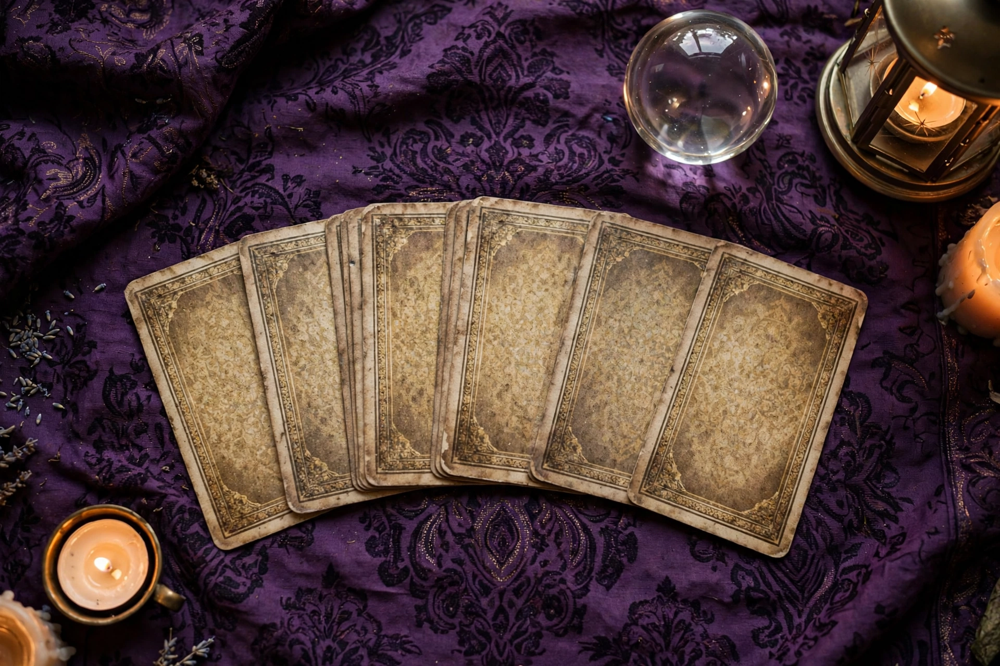
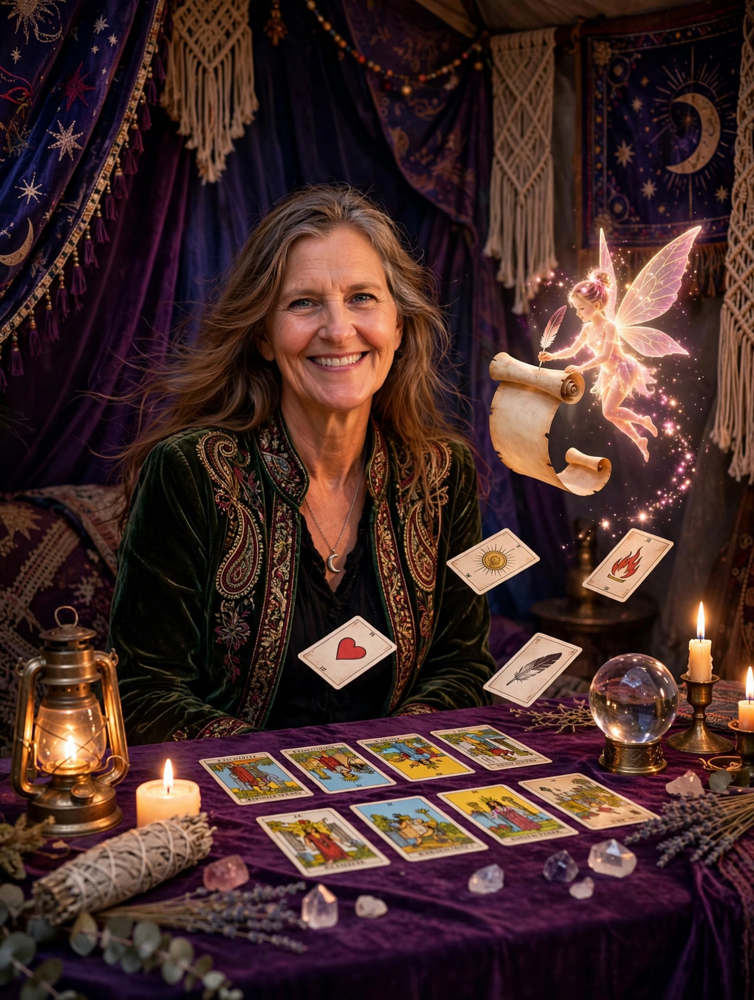
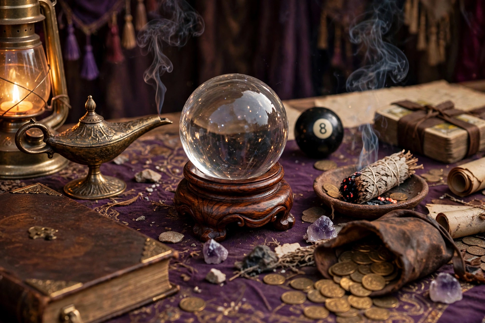

Healing the Mother & Father Wounds
Build the new foundation from within — releasing old energy, patterns, and looping thoughts, and knowing where the feelings come from.
See this session path
Hi — welcome to my booth.
Master Intuitive · Psychic · Medium · Energy Channel
“Healing the mother and father trauma and creating lasting relationships through divine intervention.”
SessionsThe candles are lit and the smoke is rising — the spirits are listening. Come down to her table and touch her things. When you're ready, rub the crystal ball and answer four little questions.
“You’re not separated from the Christ inside you. You’re a soul in a human experience.”
“I’ll pull your first card for nothing.”
One card, one question — a beginning read, on Amy. Tell her your name and the one thing you’d like the card to speak to.
Keep it light — the deep work belongs in a session, not a form.
Hi — welcome to my booth.
✦ Hear Amy's welcome
Her greeting, in her own voice — recorded at her table. (Transcript arrives with the recording.)
Everything on my table is here for you — touch the things, move them around, see what calls you.
Everything you need to know, kept the old way — in her binder, on her table. Open a tab and look under it.

Amy is a master intuitive, psychic, medium and energy channel — a woman whose booth people find when something in them is ready to move. Her full story lives in her book: open About Amy.
(Her story in her own words arrives with her — this page holds the place for it.)
“Healing the mother and father trauma and creating lasting relationships through divine intervention.”
“You're not separated from the Christ inside you. You're a soul in a human experience.”
“Build the new foundation from within.”
Her words, exactly as she says them.
Can’t decide where to start? Roll the dice and let them decide.
The dice have spoken
Build the new foundation from within — releasing old energy, patterns, and looping thoughts, and knowing where the feelings come from.
See this session path
From the healed foundation, into relationships that last.
See this session path
Abundance in all of its forms. Ching ching, ding ding — this garden glitters.
See this session path
Amy reads the cards like nobody’s business — start with your first card, free, above.
See this session pathThe energy you carry, and what it’s saying. What Amy does with auras stands here in her words.
See this session path
When you’re ready for the full work, this is the door.
Go to bookingAmy holds compassion and space for others to heal from her own blueprint — how she healed her own mother and father trauma, then relationships, then money. What she’s helped with, in her words: healing the mother and father trauma, creating lasting relationships, and love, wealth, health, and abundance in all of its forms.
Real words from Amy’s people will stand here — nothing added until it’s real and shared with permission.
Amy says: “Before we start — write down what’s heavy. We’ll smoke it out together.”
Before a reading, you clear the way. Sage is the classic: a bundle is lit, and the smoke is wafted around you and around the room — around your head, your heart, the corners, the doorway — to smoke out the heavy, stuck, bad-feeling energy and leave the space clean. People also clear with other smokes and scents, bells, and a quiet minute to breathe and set what they’re asking about. Amy’s own way of clearing, in her words, stands here as she tells it.
The smoke takes the problem. Here’s the clear thought that’s left:
A clear thought to sit with — for Amy’s real answer, let her pull your first card, free.
This is her table, and everything on it is real and touchable. Tap the lamp, the ball, the 8-ball — right where they sit.

Make a Wish Wake the Ball Ask the 8-Ball Smoke It Out Pull a Card — Free The CoinsAmy says: “Go on — rub the ball. Let’s see what wakes up for you.”
Rub Amy’s crystal ball — round and round, like you mean it — until it wakes up. Then answer four quick questions and get a quick read off your answers.
Your quick read
See that path Pull your first card — free
Send my answers to Amy — her Muse drafts the fuller read
A quick read off four answers is a taste. Amy’s real read is her cards, in a session.
Amy says: “And this one’s just for fun — like when we were kids.”
Like when we were kids. Think your question, shake the ball, see what floats up. Just for fun — it moves you forward a step, but the true answer comes from Amy. Book your meeting with her for that.
Amy says: “Make a wish, love. Put it in the lamp — wishes are beginnings.”
Put your wish in it. Rub the lamp, say your wish in your heart, and hope it works — the genie has been listening a long, long time.
The genie heard you
A wish is a beginning, not a guarantee — the genie hopes with you. Wishes grow roots in a reading: book your meeting with Amy, or start with her free card.
The crystal ball and the 8-ball are the fun at the door — a taste, a nudge, a first step down the trail. The true answer doesn’t live in a toy. It lives in a reading, with Amy herself, her cards in her hands.
When you’re ready to move forward: Book your meeting with me
Or take the first step free — she’ll pull your first card for nothing.
Her sittings, written in the book the old way. Choose your garden, then write your name in.
Every gypsy shop has one by the door. Sign it before you go — leave her a line.
A note on this work: Amy’s work is spiritual guidance and personal exploration. It is not therapy, medicine, legal advice, or financial advice, and it does not guarantee outcomes. Her healing line above is her own description of her practice, in her words.